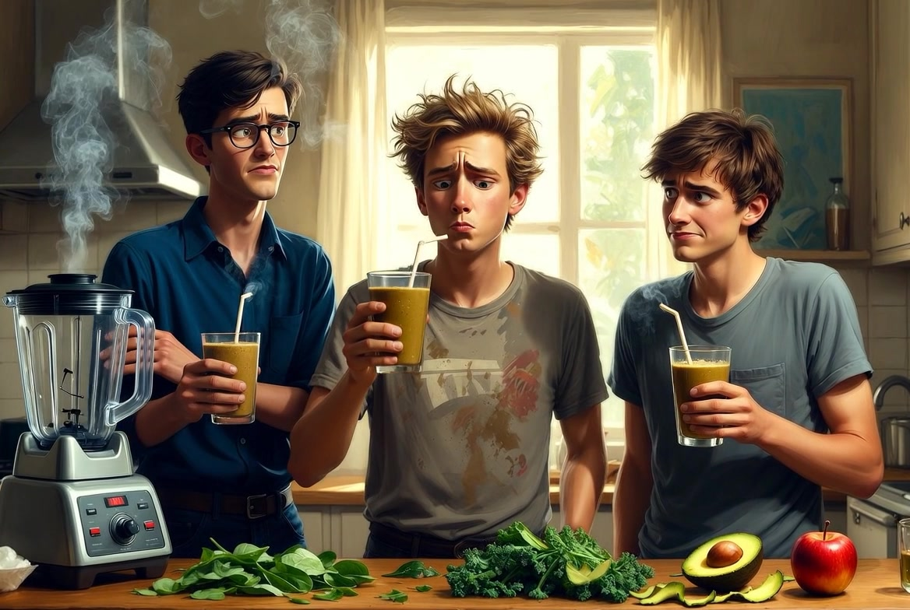

- Have you ever tried to make a healthy smoothie? What did you put in it?
- What's the strangest thing you've ever eaten or drunk?
- The phrasal verb to give out can mean to stop working. When was the last time something “gave out” on you?
After the pie incident, we decided we needed to be healthier. Mike announced it one morning.
“Guys, I've been reading. If we don't change our eating habits, we'll be dead by fifty.”
Dave didn't look up from his book.
“If you don't change your eating habits, you'll be dead by fifty. I had salad yesterday.”
Mike ignored him. “I bought a blender. We're going to make smoothies. Super healthy ones. If we drink one every day, we'll live forever.”
Narrator: “That seems unlikely.”
Mike: “Don't give me your negativity!”
He pulled out bags of groceries. Spinach, kale, avocado, banana, protein powder, chia seeds, ginger, and something green that none of us recognized.
“What's that?” Dave asked.
“The cashier said it's wheatgrass. Very healthy.”
“It looks like lawn clippings.”
“That's because it IS lawn clippings,” Mike said proudly. “Well, basically.”
Dave sighed. “If I drink this and die, I'm blaming you.”
We gathered in the kitchen. Mike threw everything into the blender. Spinach, kale, avocado, banana, protein powder, chia seeds, ginger, and a handful of wheatgrass. Then he added almond milk.
“Are you sure about the proportions?” I asked.
Mike waved his hand. “If you follow recipes, you're not an artist. I'm an artist.”
He pressed the button.
The blender made a sound like a dying robot. Then it stopped. Smoke came out.
Mike: “Uh oh.”
Dave: “I think the blender just gave out. It gave up. It gave its life for your experiment.”
Mike poured the contents into glasses anyway. The smoothie was brownish-green. It looked like something from a swamp. It smelled like a field after rain — but not in a good way.
We stared at it.
Mike: “If I drink this, what will happen?”
Dave: “If you drink this, you'll probably give birth to a tree.”
Narrator: “Maybe we should give in and just have coffee.”
But Mike was determined. He picked up his glass, closed his eyes, and drank.
For a moment, nothing happened. Then his face went through stages: surprise, confusion, horror, and then... peace.
“It's not that bad,” he whispered.
Dave and I looked at each other. Dave took a tiny sip. His eyes widened.
“It tastes like... if a salad and a garden hose had a baby.”
I tried it. He was right. It was grassy, chunky, and somehow bitter and sweet at the same time. It was the strangest thing I'd ever tasted.
But we drank it. All of it. Because Mike had made it, and we weren't going to give up on him.
For the rest of the day, we felt weird. Clean, but weird. Like our insides had been power-washed.
Mike's phone rang. It was his grandmother.
“Darling, I heard you're making smoothies. If you add an apple, they taste much better.”
Mike looked at the empty glasses. The apple sat untouched on the counter.
We burst out laughing. If we had added the apple, it might have been delicious. But then we wouldn't have this story.
And honestly? The story was worth it.